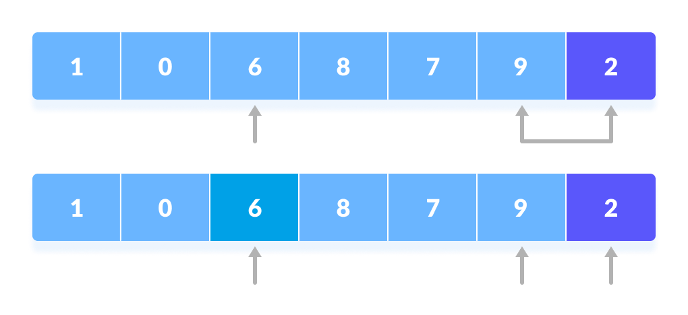
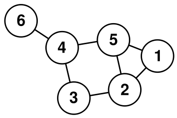

Mejora del algoritmo clásico: Quicksort
JavaEnlace al proyecto:

Mejora del algoritmo Quicksort usando el algoritmo de Inserción Directa para cubrir casos en los que la eficiencia del algoritmo normal se vea comprometida. Fue realizada como práctica para la asignatura: Análisis y Diseño de Algoritmos
UVash
CEnlace al proyecto:

Programación de un Shell con modo interactivo o no interactivo realizada para la asignatura: Estructura de Sistemas Operativos
Problema de las torres
JavaEnlace al proyecto:
Resolución de un problema planteado para la asignatura: Análisis y Diseño de Algoritmos. El objetivo era resolverlo mediante Programación dinámica pero mi compañero y yo llegamos a una solución mediante una estrategia similar pero menos eficiente. El proyecto además del código, contiene algunas entradas de prueba, un pdf con el enunciado y otro con una descripción sobre la elaboración de la práctica
Nested
Java, Servlets, JSP, JavaScript, HTML, CSS, MariaDBEnlace al proyecto:
Se trata de una aplicación web desarrollada para la asignatura: Servicios y Sistemas Web. El proyecto esta realizado empleando: Servlets, MariaDB, HTML, CSS, XML y JS. También se han empleado las APIs: Nominatim y Leaflet (que emplean OpenStreetMap) para el uso de mapas interactivos. La aplicación facilita la organización de eventos universtiarios, ya sean privados o públicos. Para más información sobre las funcionalidades no duden en contactarme
Caralibro: la red social
PythonEnlace al proyecto:

Proyecto realizado con Python para la asignatura: Estructuras de Datos y Algoritmos. En ésta se buscaba encontrar conexiones entre usuarios mediante el uso de grafos (primera parte) y la mejora del rendimiento del algoritmo de la primera parte utilizando estructuras de datos como una Hash Table. Enunciado y ficheros de prueba se encuentran en el proyecto
Portfolio
Next.js, React, TailwindCSSEnlace al proyecto:
Primero el portfolio lo desarrolle con React puro, pero no terminé del todo satisfecho y decidí rediseñarlo con un mejor aspecto y además así poder ir probando algunos nuevos conocimientos de Next.js